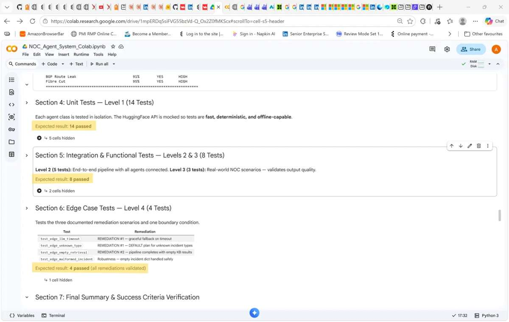

Section 09
Code & Evidence
This page holds the complete source of the week 11 system and the evidence files cited in this portfolio. The same code is in my GitHub repository and is deployed at https://noc-agent-buali.streamlit.app.
Evidence files
- telecom_agent_source.zip: full codebase with tests, README and Colab notebook
- pytest_run_2026-10-12.txt: verbose test log, 26 passed
- week11_presentation.pdf: the submitted 13-slide deck with speaker notes

Source files
telecom_agent/.pytest_cache/README.mdtelecom_agent/.streamlit/config.tomltelecom_agent/NOC_Agent_System_Colab.ipynbtelecom_agent/README.mdtelecom_agent/agents/__init__.pytelecom_agent/agents/analyser.pytelecom_agent/agents/base.pytelecom_agent/agents/message.pytelecom_agent/agents/orchestrator.pytelecom_agent/agents/planner.pytelecom_agent/agents/reporter.pytelecom_agent/agents/retrieval.pytelecom_agent/app.pytelecom_agent/requirements.txttelecom_agent/tests/__init__.pytelecom_agent/tests/test_suite.py